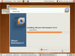
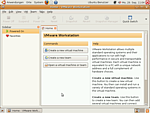
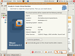
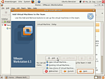
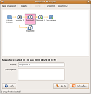
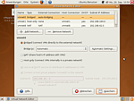

VMware Workstation
Achtung!
Diese Seite wird aktuell überarbeitet. Bitte hier keine Änderungen mehr vornehmen, sondern in Baustelle/VMware Workstation!
Archivierte Anleitung
Dieser Artikel wurde archiviert, da er - oder Teile daraus - nur noch unter einer älteren Ubuntu-Version nutzbar ist. Diese Anleitung wird vom Wiki-Team weder auf Richtigkeit überprüft noch anderweitig gepflegt. Zusätzlich wurde der Artikel für weitere Änderungen gesperrt.
Zum Verständnis dieses Artikels sind folgende Seiten hilfreich:
In diesem Artikel geht es um die Installation und Benutzung der VMware Workstation, einer umfangreichen Virtualisierungslösung. Einen Einstieg in das Thema und weiterführende Informationen gibt es im Artikel zur Virtualisierung.
Installation¶

Eine aktuelle Version der Software bekommt man beim Hersteller unter VMware Workstation  . Gegen eine Registrierung darf man auch eine kostenlose Testversion
. Gegen eine Registrierung darf man auch eine kostenlose Testversion  herunterladen. Die Workstation wird sowohl für ein 32-bit- als auch für ein 64-bit-Linux angeboten. Bei der Wahl zwischen *.bundle und *.rpm sollte man das *.bundle wählen.
herunterladen. Die Workstation wird sowohl für ein 32-bit- als auch für ein 64-bit-Linux angeboten. Bei der Wahl zwischen *.bundle und *.rpm sollte man das *.bundle wählen.
Hat man die Datei heruntergeladen, öffnet man ein Terminal [3], wechselt in das entsprechende Verzeichnis und startet die Installation.
cd /Pfad/zum/heruntergeladenen/Bundle/ sudo sh VMware-Workstation-6.5.0-xxx.architektur.bundle
Daraufhin startet die grafische Installation, die den Rest erledigt. Es wird nun neben der Workstation auch der VMware Player und ein Virtual Network Editor installiert.
Benutzung¶
Hier wird die Benutzung der VMware Workstation 6.5 beschrieben. Die Bedienung anderer Versionen kann gegebenenfalls abweichen.
Die Funktionen des VMware Player finden sich auch in der Workstation wieder. Es empfiehlt sich auch der Abschnitt Benutzung zum VMware Player.
Workstation starten¶
Bei der Installation wurde ein Startmenüeintrag angelegt. Dieser befindet sich im GNOME-Menü unter
"Anwendungen -> Systemwerkzeuge -> VMware Workstation"
Alternativ kann das Programm mit dem Befehl vmware gestartet werden [4].
Oberfläche allgemein¶
 Die Bedienoberfläche der VMware Workstation gleicht einem Browser. Auf der Startseite kann man neue VM anlegen, neue Teams anlegen und existierende VM öffnen. Werden mehrere virtuelle Maschinen geöffnet, so erscheinen diese in Tabs.
Neue VM anlegen¶
Hier können neue virtuelle Maschinen angelegt und konfiguriert werden. Ein grafischer Assistent unterstützt dabei. Da der Assistent allerdings nur englisch spricht, hier eine Erklärung der einzelnen Schritte. 
"Virtual Machine Configuration"
"Typical" - Konfiguration mit notwendigen Schritten
"Custom" - Konfiguration mit mehr Möglichkeiten (im Folgenden verwendet)
"VM Hardware Compability" - je nach Einstellung wird die VM kompatibel mit anderen VMware Produkten sein, aber eventuell bestimmten Hardwareeinschränkungen unterliegen
"Install operating system from"
"Installer disc" - Installationsmedium im CD/DVD-Laufwerk des Wirts mit der VM verbinden
"Installer disc image file" - CD/DVD-Abbild als Installationsmedium verwenden
"I will install the operating system later." - Die Installation wird später vorgenommen (dazu muss dann eine CD/Abbild eingelegt werden).
"Guest operating system" - hier kann das Gastsystem ausgewählt werden (dann wird wahrscheinlich die virtuelle Hardware ein wenig darauf abgestimmt)
"Virtual Machine Name" - hier werden Name und Speicherort der VM-Datei festgelegt
"Processors" - Anzahl der Prozessoren festlegen
"Memory" - Größe des virtuellen Arbeitsspeichers festlegen
"Network Connection"
"Bridged" - VM erscheint wie ein physischer Rechner im Netzwerk des Wirts
"NAT" - VM kommuniziert mit der Außenwelt über die IP des Wirts (NAT)
"Host-only networking" - VM und Wirt kommunizieren in einem eigenen Netz
"Do not use network connection" - VM erhält keine Netzwerkverbindung
"I/O Adapters Types" - Typ des virtuellen Laufwerkcontrollers auswählen (IDE/SCSI)
"Disk"
"Create new virtual disk" - Neuen Festplattencontainer anlegen (im Folgenden verwendet)
"Use an exisiting virtual disk" - Existierenden Container verwenden
"Use a physical disk" - Physisches Laufwerk verwenden
"Virtual Disk Type" - Art des Laufwerks wählen (IDE/SCSI) und Schreibmodus auf dieses Laufwerk
"Disk Size" - Größe des Laufwerkcontainers wählen und einstellen, ob der Container als einzelne Datei gelagert oder gesplittet wird
"Disk File" - Speicherort des Containers festlegen
"Finish" - Information überprüfen und VM anlegen
Neues Team anlegen¶
 Ein Team ist eine Gruppe von VM, die man als Team gemeinsam starten und ausführen kann. Die Teammitglieder können in einem gemeinsamen privaten Netzwerk miteinander kommunizieren. Man kann einfach zwischen den Teammitgliedern hin- und herschalten.
VM oder Team starten und bedienen¶
Man kann eine neu angelegte oder existierende VM oder ein ganzes Team starten, indem man die entsprechende *.vmx-Datei auswählt. Natürlich kann man auch fertige VM aus dem Internet herunterladen. Informationen dazu findet man bei den Links.
Die VMware Workstation enthält auch die Elemente und Funktionen des VMware Player.
VM verwalten¶

jederzeit die Konfiguration einer existierenden Maschine ändern
beliebig viele Snapshots zu jeder VM erzeugen und zu beliebigen Snapshots springen (nicht nur dem letzten)
Snapshots können jederzeit, auch bei laufender VM, erzeugt werden
VM klonen
Bildschirmfotos und -videos aufnehmen
verschiedene Ansichten wählen (Vollbild, Nahtlosmodus,...)
Tastenkombinationen z.B. für Einfangen und Lösen von Tastatur und Maus festlegen
Netzwerk der VM¶
 Mit dem Virtual Network Editor kann man verschiedene Netzwerkkonfigurationen festlegen, mit denen die VM dann arbeiten können. So kann man mit der VM dann schnell zwischen den voreingestellten Varianten umschalten.
"Bridged" - In diesem Modus wird die VM in das Netzwerk des Wirts wie ein physischer Rechner eingebunden. Hat man z.B. einen Router, dann kann die VM genau wie ein physischer Rechner eine IP per DHCP beziehen. Sind am Wirt mehrere Netzwerkkarten vorhanden und sind beide in unterschiedlichen Netzwerken, kann man auswählen, in welches der beiden sich die VM verbinden soll.
"NAT" - Hierbei teilt sich die VM die IP-Adresse mit dem Wirt, siehe NAT
"Host-Only" - Bei diesem Modus sind VM und Wirt in einem eigenen Netzwerk verbunden.
Gasterweiterungen¶
Die Gasterweiterungen (VMware Tools) ermöglichen etwa das Verwenden gemeinsamer Ordner zwischen VM und Wirt, den Nahtlosmodus und das variable Einstellen der Bildschirmauflösung. Es gibt einen extra Menüpunkt, um die VMware Tools zu installieren. Weitere Informationen findet man im Artikel VMware/Tools.
Update¶
Nach einem Upgrade des Kernels des Wirtsystems kann man die Workstation zunächst nicht starten. Es erscheint ein Hinweis, dass einige Kernelmodule neu erzeugt werden müssen. Der Aufforderung muss man mit Root-Rechten[5] nachgehen. Nach dem Erstellen der Module startet sich die Workstation wieder.
Deinstallation¶
Die Deinstallation der Workstation und der dazugehörigen Komponenten wird mit Administrationsrechten in einem Terminal [3] gestartet durch
sudo vmware-uninstall
Version 8.0.1
sudo vmware-installer -u vmware-workstation
Problemlösungen¶
Installation unter Ubuntu Lucid Lynx 10.04 stockt¶
Die Installation von VMware Workstation 6.5.5 bleibt stehen. Nachfolgend die kompletten Schritte in Deutsch, wobei 6.5.5-328052 für die jeweilige Version und Nummer des Build steht und variieren kann.
Zunächst direkt als root anmelden. Danach eine Endlosschleife starten, die bestimmte Prozesse während der Installation von VMware Workstation "killen" wird:
sudo -i while true; do killall -9 vmware-modconfig-console; sleep 1; done
In einem weiteren Terminal folgenden Befehl eingeben, um VMWare zu installieren. Besonderheit ist hier der Parameter --ignore-errors.
sudo ./VMware-Workstation-6.5.5-328052.x86_64.bundle --ignore-errors
Wenn die Installation erfolgt ist, einfach die Schleife im ersten Fenster mit Strg + C abbrechen.
Das Ergebnis ist eine installierte Vmware, jedoch ohne Kernelmodule.
Nun gibt es noch einen Fehler, wobei das Erstellen des VMNet-Modul fehlschlägt. Bei nachfolgender provisorischer Lösung wird ein offensichtlich fehlender Eintrag in einer der Konfigurationsdateien von VMware hinzugefügt.
cd /tmp sudo tar xvf /usr/lib/vmware/modules/source/vmnet.tar
Dann wird in dem Verzeichnis vmnet-only mit einem Editor mit Root-Rechten die Datei vnetUserListener.c geöffnet und in der Zeile 37 (also unter der Zeile mit #include vnetInt.h) folgendes hinzugefügt:
#include "compat_sched.h"
Nun die Datei speichern und schließen.
Das extrahierte Archiv wird mit der geänderten Datei zurückgepackt:
sudo tar cvf /usr/lib/vmware/modules/source/vmnet.tar vmnet-only
Nun kann VMWare Workstation mit folgenden Befehlen fertig installiert werden:
sudo vmware-modconfig --console --install-all
Sollte der Vorgang nun erneut abgebrochen werden (diesmal aufgrund eines Fehlers im 'VMCI'-Modul), sind weitere Modifikationen notwendig. Zunächst wird das vmci.tar-Archiv entpackt
sudo tar xvf /usr/lib/vmware/modules/source/vmci.tar
und mit einem Editor mir root-Rechten die Datei vmci-only/pgtbl.h bearbeitet. In der Zeile 27 (also unter der Zeile mit #include "compat_page.h") Folgendes hinzugefügt:
#include "compat_sched.h"
Datei speichern und schließen.
Danach wird das Paket wieder zusammengepackt:
sudo tar cvf /usr/lib/vmware/modules/source/vmci.tar vmci-only
Dies löst das Problem jedoch meist nicht vollständig. In diesem Fall hilft ein kleiner Trick um den Vorgang erfolgreich abzuschließen:
Zunächst wird die Kompilierung erneut gestartet:
sudo vmware-modconfig --console --install-all
Nach ca. 5-10 Sekunden bzw. während die Module kompiliert werden (zu erkennen an der Ausgabe einer Menge Warnungen) dann den Prozess unterbrechen: Strg + Z
Jetzt wurde der Prozess als Job pausiert und man kann die Verzeichnisse an die richtige Stelle unterschieben, da sie aus bislang unerfindlichen Gründen nicht nach /tmp/vmware-root/modules kopiert werden. Wer die zuvor entpackten Verzeichnisse bereits aus /tmp entfernt hat, darf diese nun beide wieder wie oben angegeben entpacken. Ansonsten kann der Kopiervorgang mit etwas Shell-Substitution gestartet werden:
sudo cp -pr /tmp/vm{ci,net}-only /tmp/vmware-root/modules/ Nun kann der Job wieder aufgenommen werden:
%
Wenn alles gut gegangen ist, dann bestätigt der Job die Wiederaufnahme und schließt die Installation mit den letzten Zeilen sauber ab:
Starting VMware services: Virtual machine monitor done Virtual machine communication interface done Blocking file system done Virtual ethernet done Shared Memory Available done
Diese provisorische Lösung ist ein Mix aus den Quellen:
Blogeintrag
auf saarlinux.deForeneintrag
auf ubuntuforums.org
Links¶
vmware
- Webseite des Herstellersvmware-forum
- Deutsches VMware-Forum appliances
- Fertige VM herunterladeneasyvmx
- VM erstellen und herunterladen
- Erstellt mit Inyoka
-
 2004 – 2017 ubuntuusers.de • Einige Rechte vorbehalten
2004 – 2017 ubuntuusers.de • Einige Rechte vorbehalten
Lizenz • Kontakt • Datenschutz • Impressum • Serverstatus -
Serverhousing gespendet von